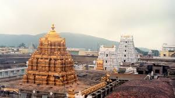

Famous Indian Temples

A Mandir or Hindu temple is a symbolic house, seat and body of divinity for Hindus. It is a structure designed to bring human beings and gods together, using symbolism to express the ideas and beliefs of Hinduism.[1][2] The symbolism and structure of a Hindu temple are rooted in Vedic traditions, deploying circles and squares.[3] It also represents recursion and the representation of the equivalence of the macrocosm and the microcosm by astronomical numbers, and by "specific alignments related to the geography of the place and the presumed linkages of the deity and the patron".[4][5] A temple incorporates all elements of the Hindu cosmos — presenting the good, the evil and the human, as well as the elements of the Hindu sense of cyclic time and the essence of life — symbolically presenting dharma, kama, artha, moksa, and karma.
Let us go through some of the facts about famous temples in India
1. Tirumala
This is one of the famous temple in india. This is the abode of Lord Venkateshwara. This temple is located in the district of Chittor.It is a temple situated on the top of seven hills. It is one of the richest temples in India.
Lets go through a sloka on Lord Venkateshwara

Kamala kucha choochuka kumkumatho
Niyatharuni thaathula neela thano
Kamalayatha lochana loka pathe
Vijayee bhava venkata shaila pathe || 1 ||
Meaning: -
Victory to the lord of Venkata Mountain,
Whose blue body coated with vermillion,
From the breasts of Lakshmi appears red,
And who is the lord of the universe,
With eyes reminding us of lotus flower.